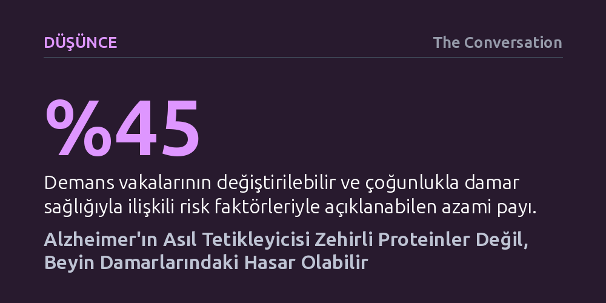

DUSUNCE · The Conversation · 2026-09-07
Yeni araştırmalar, Alzheimer'ın temel sebebinin sanılanın aksine amiloid plakları değil, beyin damarlarındaki hasar ve dolaşım bozukluğu olduğunu gösteriyor. Amiloidi temizleyen yeni ilaçların zihinsel gerilemeyi durduramaması da plakların asıl neden değil, altta yatan hasarın sonucu olduğunu kanıtlıyor.
Alzheimer'ı yalnızca genetik ve kaçınılmaz bir protein birikimi olarak görmek yerine, yaşam tarzıyla kontrol edilebilen damar sağlığının doğrudan bir sonucu olarak değerlendirmemizi sağlıyor.

On yıllardır tıp dünyasında Alzheimer dendiğinde akla gelen ilk şüpheli, beyinde biriken zehirli proteinlerdi. Beyni karmaşık bir araba motoruna benzetecek olursak; nöronlar bu motorun merkezi, biriken amiloid ve tau proteinleri ise zamanla sistemi kilitleyen "pas" gibi görülüyordu. İlaç endüstrisi de uzun yıllar boyunca bu pası temizlemenin hastalığı durduracağı varsayımına dayanarak amiloid plaklarını hedef alan tedavilere odaklandı.
Ne var ki son klinik gözlemler bu köklü hipotezi ciddi biçimde sarstı. Yapılan otopsiler ve taramalar, hiçbir zihinsel gerileme yaşamayan tamamen sağlıklı bireylerin beyinlerinde de yoğun amiloid plakları bulunabildiğini ortaya koydu. Dahası, lekanemab ve adukanumab gibi plakları neredeyse tamamen yok edebilen yeni nesil ilaçlar dahi hastaların bilişsel çöküş hızını anlamlı ölçüde yavaşlatamadı; plaklar temizlense bile motor arızalanmaya devam etti.
Bu tablo araştırmacıları kaçınılmaz bir düşünce değişimine zorluyor: Amiloid plakları hastalığın asıl kaynağı değil, altta yatan bambaşka bir hasarın arkasında bıraktığı bir sonuç olabilir. Bir arabada pası kazımak motorun neden aşındığını çözmüyorsa, asıl bakılması gereken yer o pası başlatan ilk yangının nerede çıktığıdır.
Beynin düzgün çalışması, sadece nöronların sağlamlığına değil, onlara oksijen ve besin taşıyan damar tesisatının kusursuz işlemesine bağlıdır. Son on yılda kuvvetlenen yeni bir hipotez, Alzheimer'ın asıl köklerinin sinir hücrelerinden önce bu kan damarlarında atıldığını ileri sürüyor. Yakıt boruları tıkandığında veya çatladığında, motorun teklemeye başlaması kaçınılmaz hale geliyor.
Yüksek tansiyon, tip 2 diyabet, yüksek kolesterol ve damar sertliği gibi kronik sorunlar, beyindeki ince kılcal damar ağını yıpratıyor. Bu yıpranma, kan akım hızında ve hacminde düşüşe, mikroskobik kanamalara ve doku düzeyinde kronik iltihaplanmaya yol açıyor. Beyin yeterli oksijeni alamadığında ve hücresel atık temizleme mekanizmaları çöktüğünde, amiloid proteinleri de birikmeye başlıyor. Yani amiloid, damar hasarı ve iltihaba karşı beynin geliştirdiği savunmanın bir yan ürünü olabilir.
Dahası, beyni koruyan kan-beyin bariyeri hasar gördüğünde kandaki yabancı hücreler sinir sistemine sızmaya başlıyor. Tesisattaki bu sızıntı, nöronların çevresinde toksik bir ortam yaratarak iltihaplanmayı ve bilişsel gerilemeyi doğrudan tetikliyor.
Demans araştırmaları tarihindeki en kapsamlı literatür derlemelerinden biri, vakaların yüzde 45'ine kadar varan bir kısmının değiştirilebilir risk faktörleriyle bağlantılı olduğunu ortaya koyuyor. Bu risklerin profilini incelediğimizde ise karşımıza neredeyse tamamen damar sağlığını belirleyen unsurlar çıkıyor.
Hareketsiz bir yaşam, yüksek LDL kolesterolü, sigara kullanımı, obezite, aşırı alkol tüketimi, yüksek tansiyon ve şeker hastalığı doğrudan damar yapısını hedef alıyor. Bu etkenler bir araya geldiğinde beynin kanlanmasını felce uğratarak demans riskini katbekat artırıyor.
Bu durum umut verici bir gerçeğe işaret ediyor: Alzheimer kaçınılmaz bir kader olmak zorunda değil. Damar sağlığını koruyacak adımları erken yaşlardan itibaren hayat tarzı haline getirmek, beynin üzerindeki yıpranma payını ciddi ölçüde azaltabilir.
Günümüzde bilim insanları, Alzheimer'ı tek bir zehirli moleküle indirgemekten uzaklaşıp çok faktörlü bir bakış açısını benimsiyor. Damar hasarının yanı sıra tau lifleri, bağışıklık sisteminin aşırı tepkileri, hücrenin enerji santralleri olan mitokondrilerdeki aksaklıklar ve sinir iletimindeki kopukluklar birbirini besleyen karmaşık bir ağ oluşturuyor.
Bu yeni bakış açısıyla birlikte tanı teknolojileri de hızla dönüşüyor. Biyomedikal araştırmalara dahil edilen yapay zekâ ve ileri görüntüleme yöntemleri, beyin damarlarındaki ve kan-beyin bariyerindeki en ufak değişimleri belirtiler belirmeden onlarca yıl önce saptayabiliyor. Kan testleriyle bakılabilecek damarsal biyobelirteçler, hastalığı henüz ilk kıvılcım anında yakalama potansiyeli taşıyor.
Kalıcı ve kesin tedaviler geliştirilene kadar beyni korumanın en sağlam yolu ise kontrolümüzde olan alışkanlıklara sarılmak: Hayat boyu hem fiziksel hem de zihinsel ve sosyal olarak aktif kalarak motoru ve tesisatı sağlam tutmak.